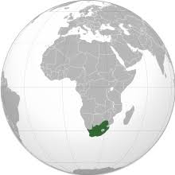
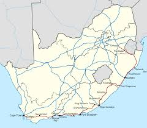

|  |
Janubiy Afrika
Janubiy Afrika , rasman Janubiy Afrika Respublikasi ( RSA ),
Afrikaning eng janubiy mamlakati . Ustidan bilan million 59 odamlar , bu
dunyodagi bo'lgan 24-eng ko'p aholisi bor o'n mamlakat va 1.221.037 kvadrat
kilometr (471,445 kvadrat milya) maydonni o'z ichiga oladi. Janubiy Afrikada
uchta poytaxt bor: ijrochi Pretoriya , sud Bloomfontein va qonun chiqaruvchi
Keyptaun . Eng katta shahar - Yoxannesburg . Janubiy afrikalik 80% haqida
bo'lgan qora Afrika ajdodlarimiz, [9] a o'rtasida bo'lingan etnik guruhlar
turli tilidaturli xil Afrika tillari . [13] Qolgan aholi Afrikaning Evropa ,
Osiyo va ko'p millatli ajdodlarning eng yirik jamoalaridan iborat .
|
Janubiy Afrika
Afrika qit'asining eng janubiy mamlakati bo'lgan Janubiy Afrika , turli xil topografiyasi ,
buyuk tabiiy go'zalligi va madaniy xilma-xilligi bilan mashhur bo'lib , bularning barchasi
mamlakatni aparteid qonuniy tugaganidan buyon sayohatchilar uchun qulay
manzilga aylantirdi (afrika. "Alohida", yoki irqiy ajralish) 1994 yilda.
Janubiy Afrikaning olisligi - Afrikaning yirik shaharlari, masalan,
Lagos va Qohira dan minglab kilometr uzoqlikda va Evropaning aksariyat
qismlaridan, Shimoliy Amerika va Sharqiy Osiyodan 6000 milya uzoqlikda
joylashgan bo'lib , uning asosiy savdo sheriklari joylashgan. 20-asrning
katta qismi uchun aparteidning rasmiy tizimini mustahkamlash . Ushbu
tizim yordamida ozchilik oq tanli aholi tomonidan boshqariladigan hukumat
uy-joy, ta'lim va hayotning deyarli barcha sohalarida hukumat tomonidan
belgilangan irqlar o'rtasida ajratishni majbur qildi va amalda uchta
millatni yaratdi: oq tanlardan biri (asosan inglizlar va asosan
xalqlardan iborat) Gollandcha [Siyosiy ustunlikni qo'lga kiritish uchun
avlodlar davomida kurashgan Boer ] ajdodlari, bu kurash 1899-1902
yillardagi Janubiy Afrikadagi urush bilan zo'ravonlik avjiga chiqqan);
qora tanlilardan biri (shimoliy-g'arbiy cho'lning San-ovchi
yig'uvchilari , sharqiy platolarning zulu chorvadorlari va janubiy Keyp
viloyatlari Xoeyxo dehqonlari kabi xalqlardan iborat ); va " Rangli
odamlar" (aralash irqiy odamlar) va etnik osiyoliklar (hindular,
malaylar, filippinliklar va xitoylar). Aparteid rejimi dunyo
jamoatchiligining aksariyati tomonidan xo'rlangan va hatto qattiq
qarshilik ko'rsatgan va 1980-yillarning o'rtalarida Janubiy Afrika
o'zini dunyodagi pariahlar qatoriga qo'shgandavlatlar, hayotning deyarli
barcha jabhalariga ta'sir ko'rsatgan iqtisodiy va madaniy boykotlar
mavzusi . Ushbu davrda Janubiy Afrikalik shoirMongane Uolli Serot
ta'kidladi,
|  |
Poytaxt
Janubiy Afrikada poytaxt bo'lib xizmat qiladigan uchta shahar
mavjud: Pretoriya (ijro etuvchi), Keyptaun (qonun chiqaruvchi)
va Bloemfontein (sud). Yoxannesburg , mamlakatning eng yirik
shahar hududi va savdo markazi, aholisi ko'p Gauteng provinsiyasining
markazida joylashgan . Hind okeanidagi port bo'lgan Durban yirik sanoat
markazi hisoblanadi. Mamlakatning janubiy qirg'og'ida joylashgan Sharqiy
London va Port-Elizabet muhim savdo, sanoat va madaniy markazlardir.
| >
Mamlakatning janubi-g'arbiy qismida 3000 dan 7600 futgacha (900 va 2300 metr)
balandliklarga ega qadimiy buklangan tog'lar maydoni joylashgan; u
Tsitsikama, Outeniqua, Groot-Svart, Lange, Seder, Drakenshteyn va Hottentots
Golland tog'lari, shuningdek, Stol tog'i va Keyptaundagi uning o'ziga xos
xususiyatlarini o'z ichiga oladi .